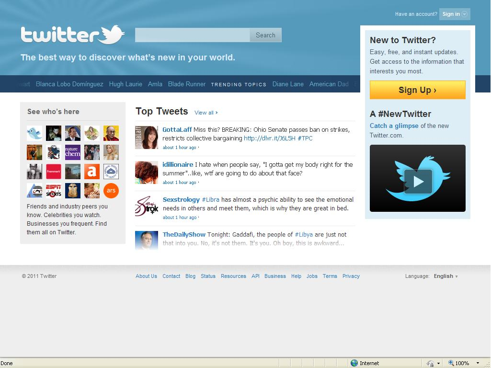

Web 2.0 is the second generation of the World Wide Web. It is characterized by the emergence of social media platforms, user-generated content, and interactive web applications.
Characteristics of Web 2.0
- Interactive and user-generated content.
- Emphasis on user participation and collaboration.
- Use of web applications and rich internet applications (RIAs).
- Social media integration.
- Improved user experience and interface design.
Example of Web 2.0
